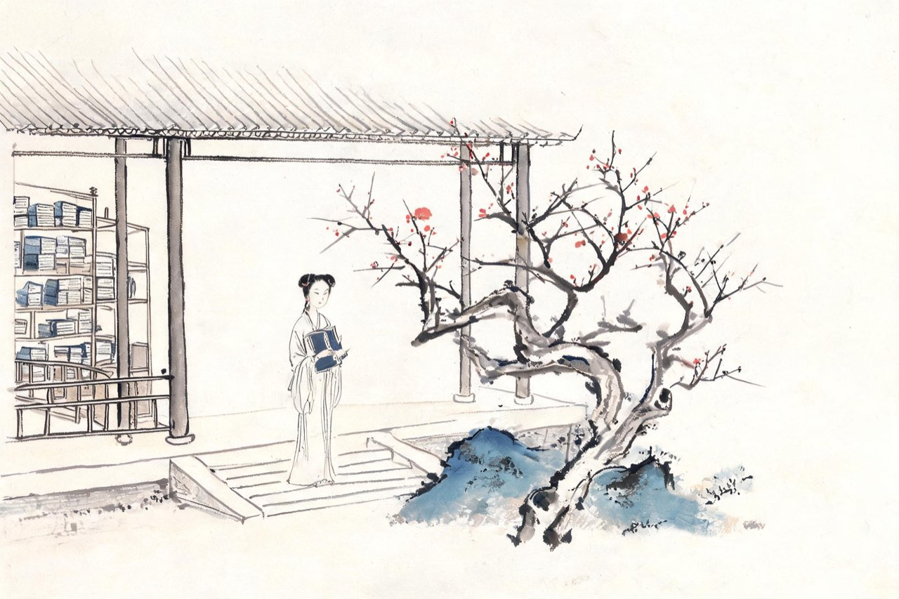
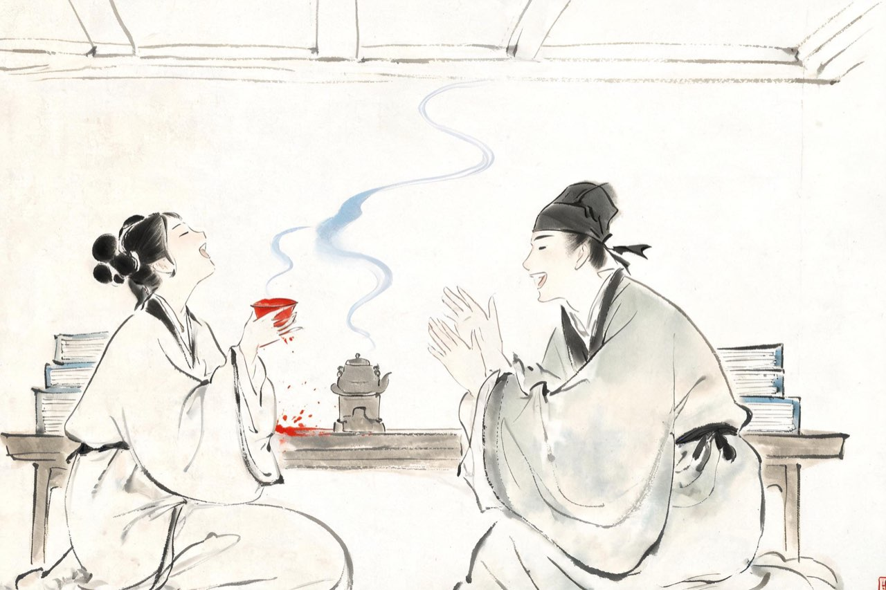
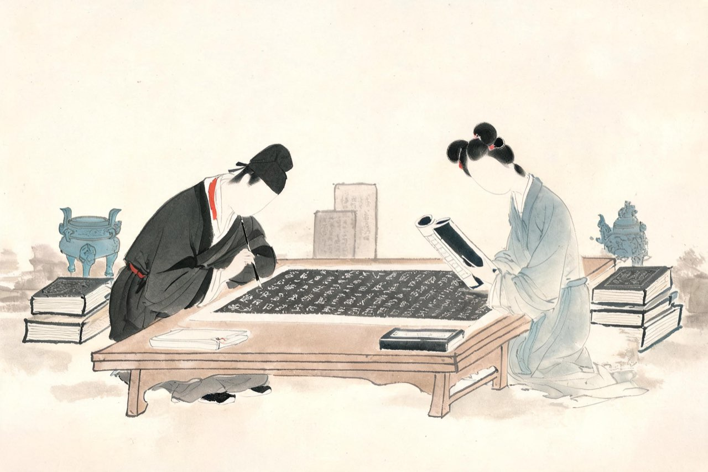

李清照 · 1107-1121
青州
赌书泼茶

归来堂
青州城里，故宅安顿下来。你把书房命名为「归来堂」——取陶渊明《归去来兮辞》之意。
你又从「审容膝之易安」里取了两个字，自号「易安居士」。屋子小到只放得下双膝，也安——从宰相的儿媳，到乡居的主妇，这个号一半是自嘲，一半是真心。
汴京的路断了，反而清净。没有宾客应酬，没有党争站队，只有书。青州十年，收藏真正成了规模：书册、拓片、钟鼎彝器，一件一件地多起来。
这样屏居乡里的日子，一过就是十几年。
注
- 「归来堂」与「易安居士」皆取义《归去来兮辞》，为屏居初期自命名
- 屏居年数，学界有十至十四年诸说（1107-1121 间），从年谱通说

赌书泼茶
饭后烹茶，是你们的游戏。堂上堆满书史，你随手指定一处，问：某事在哪本书、哪一卷、第几页、第几行。
猜中的人先饮。你记性好，总是你赢——赢了便举杯大笑，笑得太用力，茶泼翻在怀里，反而一口也没喝成。
《金石录》就在这张书案上一点点长出来。夏天的傍晚，拓片在案上摊开，钟鼎碑碣，一行行认过去——金石之学，从两个人的赏玩，变成了两个人的事业。
你后来说，甘心老是乡矣。这话是真心话。
注
- 「甘心老是乡矣」：《后序》原文，回忆青州语
- 赌书泼茶后成为文学史上夫妇相得的代称，均出此段自述
重阳又到。东篱的菊开了，他不在家。薄雾浓云，白日很长，你看着瑞脑香在兽形炉里一点一点烧完。黄昏后独自把酒，袖中满是冷香。西风卷起帘子的时候，你忽然清楚了这整日的愁是什么形状——
醉花阴·薄雾浓云愁永昼
薄雾浓云愁永昼，瑞脑销金兽。
佳节又重阳，玉枕纱厨，半夜凉初透。
东篱把酒黄昏后，有暗香盈袖。
莫道不销魂，帘卷西风，人比黄花瘦。
注
- 「瑞脑销金兽」：瑞脑香在兽形铜炉中燃尽；「销」一作「消」——异文并录
- 「纱厨」一作「纱橱」，即纱帐
- 相传明诚得词后三夜未眠，作词五十阕杂之，不能辨别，只此三句绝佳——事出《琅嬛记》，属笔记传说

金石录初成
政和七年，《金石录》三十卷初成，他写了自序。
取上自三代，下讫五季，钟、鼎、甗、鬲、盘、彝、尊、敦上的款识，丰碑大碣上显人晦士的事迹——凡见于金石刻者，二千卷，一一著录考订。
这部书，是从汴京当铺里那五百钱开始的。到今天，十六年。
书成了，人还在青州。此后几年，你们仍守着这批收藏，直到朝廷的任命把平静的日子叫停。
注
- 《金石录》三十卷，《后序》记「凡见于金石刻者二千卷」
- 「上起三代，下讫五季」为《后序》概述原书范围之语
宣和三年，他被起用，知莱州。你随后出发北上赴任，道中宿在昌乐县的驿馆，夜里下起小雨。同行送别的姊妹明天就要折返，四叠的阳关，唱了一遍又一遍——你把方寸之间的乱，写进词里，寄给她们——
蝶恋花·晚止昌乐馆寄姊妹
泪湿罗衣脂粉满，四叠阳关，唱到千千遍。
人道山长山又断，萧萧微雨闻孤馆。
惜别伤离方寸乱，忘了临行，酒盏深和浅。
好把音书凭过雁，东莱不似蓬莱远。
注
- 昌乐馆：昌乐县驿馆，在青州赴莱州道上；系年从徐培均笺注，宣和三年秋
- 「四叠阳关」：《阳关曲》反复叠唱之送别曲；「东莱」指莱州